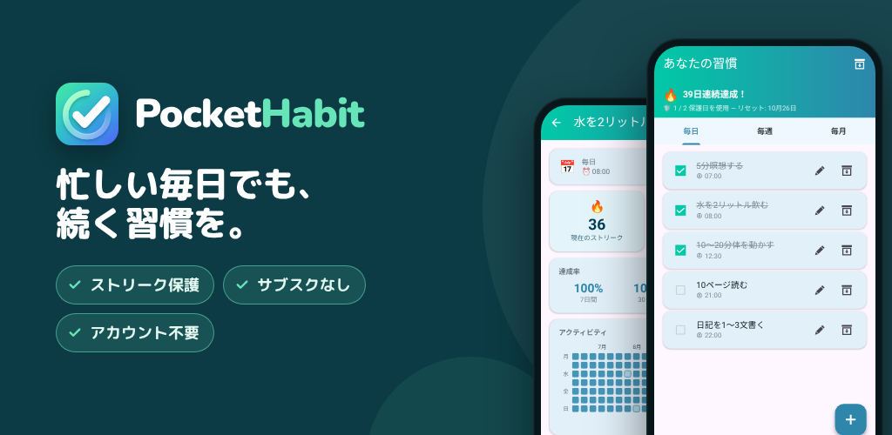

PocketHabit: 習慣トラッカー
長続きする習慣づくりを – ストリーク保護付きの習慣トラッカー。サブスクなし。
Google Playもっと良い習慣を身につけたいのに、毎日の生活に邪魔されてしまう？PocketHabitは、人間らしくいられる余裕をくれる習慣トラッカーです。
初心者のために
面倒な設定は不要。アカウントも、サブスクリプションも不要です。アプリを開いて最初の習慣を追加するだけで始められます。短い導入ガイドで、1分以内に使い始められます。
使い方
- 最初の習慣を追加するか、導入ガイドの候補から選ぶ
- ワンタップでチェック
- ストリークが伸びていくのを楽しむ。予定どおりにいかない日はストリーク保護がカバー
完璧な人はいない
PocketHabit独自のストリーク保護は、本当の変化には時間がかかることを理解しています。1日できなくても、ストリークはすぐには途切れません。立て直すための猶予があります。どれくらい厳しくするかは自分で決められます：
- 初心者：週2日までスキップ可
- 簡単：週1日スキップ可
- 普通：14日に1日スキップ可
- 難しい：月1日スキップ可
自分のペースで成長し、準備ができたら難易度を上げましょう。
すべての習慣をひとつのアプリで
毎日のルーティンも、毎週のタスクも、毎月の目標も、PocketHabitがすべて管理します：
- 毎日：朝のルーティン、運動、水を飲む
- 毎週：特定の曜日を選択
- 毎月：固定の日付、または「毎月第2月曜日」など
あなたに合ったリマインダー
習慣ごとにリマインダーを設定する代わりに、1日1回の共通リマインダーをオンにできます。アプリを開いて、まとめてチェック。ルーティンはこんなにシンプルになります。習慣ごとに時間を決めたい場合は、それぞれに個別のリマインダーも設定できます。
あなたのアプリ、あなたのスタイル
複数のカラーテーマから選べて、ダークモードとライトモードも切り替えられます。毎日開きたくなるアプリが、継続を後押しします。
やる気が出る統計
今週と今月の成果がひと目でわかります。詳細画面では、達成状況のヒートマップ、達成率、自己ベストのストリークを確認できます。
- 月間カレンダー：達成度に応じて毎日が色分けされます
- 曜日別の概要：どの曜日が得意かがわかります
- 直近7日・30日・90日の達成率
やる気が続く実績
30個の実績があなたの成長をたたえます。初めての7日間ストリーク、完璧な1週間や1か月、そしてお休みからの復帰も。
毎日のちょっとしたモチベーション
毎日、日めくりカレンダーの新しいページから始まります。続ける力をくれる240の短い言葉のひとつです。
データは自分で管理
- 習慣をバックアップファイルとして書き出し、新しいスマホで復元
- 習慣をアーカイブで一時停止しても、統計はそのまま残ります
こんな人におすすめの習慣トラッカー
小さく始めて続けたいすべての人に。水をもっと飲む、毎晩読書する、週3回運動する、部屋をきれいに保つ――目標は何でもOK。厳しすぎる習慣アプリで、1日休んだだけで挫折した経験がある人には特におすすめです。
プレミアム：一度の購入で、ずっと使える
サブスクリプションなし。月額料金なし。一度アップグレードすれば、ずっと楽しめます：
- 広告なし
- すべてのテーマが利用可能
- 統計履歴は2年以上（無料版は6か月）
- 広告を見ずにストリーク保護
- 今後のプレミアム機能もすべて含まれます
ユーザーと一緒に、ユーザーのために
PocketHabitはあなたと一緒に成長します。新機能は、実際のユーザーが本当に望んだときにだけ開発されます。あなたのフィードバックが大切です。ぜひご意見をお寄せいただき、アプリをより良くするためにご協力ください。
プライバシー：習慣のデータはすべて端末内に保存されます。アカウントは不要です。
今すぐダウンロードして、最高の自分への第一歩を踏み出しましょう。
情報
- プライバシーポリシー
- 運営情報
- お問い合わせ: drdml-info@gmx.de